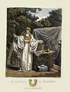
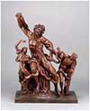
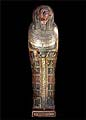

|

The
Exhibition - a short guide
|
|
The
exhibition is divided into 7 sections, each of 2 or 4 cases:
The Natural World
The Birth of Archaeology
Art and Civilisation
Classifying the World
Ancient Scripts
Religion and Ritual
Trade and Discovery
|
The Natural World
Case 1: Plants Case 2: Animals and Shells Case 3: Rocks and Minerals
Case 4: Fossils
 |
In
the 18th century, the collections in the British Museum
were divided into ‘Natural and Artificial Rarities’
– objects found in nature or made by people. Only
a few rooms had man-made objects but case after case
was filled with natural specimens. They included Sloane’s
herbarium – albums of plants from around the world,
all catalogued with a string of Latin names by his friend,
the botanist John Ray.
In
1735, the Swedish botanist Carl Linnaeus revolutionised
the way plants, animals and other objects from the natural
world were named and classified by devising a much simpler
binomial (two-name) system. His pupil, Daniel Solander,
was a curator in the Museum and applied the system to
Sloane’s birds, animals, shells, minerals and
fossils. In 1768, he travelled with the wealthy young
gentleman Joseph Banks on Captain James Cook’s
first voyage to the Pacific and helped to catalogue
the exotic collections they gathered there.
Many
of these original specimens are included in the exhibition,
as well as a number of fossils. They include one of
the first dinosaurs ever found – an Ichthyosaur,
discovered by Mary Anning at Lyme Regis in 1821. By
1880 there were so many natural history specimens that
they needed a museum of their own – the Natural
History Museum in South Kensington. |
|
|
The Birth of Archaeology
Case 5: Antiquaries Case 6: Archaeologists
| By
1828 antiquaries were a dying breed, replaced by specialist
historians and archaeologists. But for the previous two
hundred years they had collected books, manuscripts, drawings
and artefacts from the past, and travelled the country
studying ruins in order to learn more about Britain’s
early history. It was fairly easy to learn about medieval
times because more objects from those times had survived,
including religious artefacts, armour, books and buildings.
Antiquaries also began to survey and map Roman and earlier
sites, such as Stonehenge, in a more scientific and systematic
way and to learn more about the earliest Britons. This
knowledge, combined with the new study of rock strata,
led archaeologists to question the accepted date of the
world’s creation – 4004 BC – calculated
from readings of the Bible |

|
|
|
Art and Civilisation
Case 7: The
History of Art Case 8: The Origins of Art
Case 9: The Ancient Greek Ideal Case 10: Classical Revivals

|
In
1824, Charles Townley’s famous collection of Greek and
Roman sculptures, acquired on his Grand Tours in Italy, came
to the British Museum. They joined the collections of prints
and drawings, gems, coins, bronzes, vases and other classical
antiquities that had come to the Museum from fellow connoisseurs
such as Sir William Hamilton and Richard Payne Knight. These
men studied each other’s collections to learn about
the ‘progress’ of art, from what they saw as its
‘primitive’ beginnings in early civilisations
to what they considered to be the height of artistic achievement
– the sculpture and architecture of classical Greece.
This became the standard against which to measure all art
and led, in 18th-century Britain, to a classical revival in
architecture and the decorative arts. Its influence can be
seen here in Wedgwood’s pottery and in the Greek Revival
style of the architecture of the room. |
|
Classifying
the World
Case 11: King George III’s Library Case 12: The Revolution
in Science
Case 13: Understanding Greek Vases Case 14: Curiosity and Curiosities
The vast world of knowledge being gathered in the 18th century
had to be classified and organized so that it could more easily
understood and used. King George III’s library of nearly
70,000 books (which this room was designed to house) was encyclopaedic
in its scope and arranged by subject. The King loved medals
and, as part of his library, these came to the Museum with his
coin collection, all arranged by country and ruler to help bring
past history alive. He was also keenly interested in the navy,
navigation and scientific discoveries and collected instruments
and working models. In the early part of the century, Sir Hans
Sloane had collected unusual or beautifully made instruments.
His cabinets were filled with objects that aroused curiosity
and they were catalogued and displayed in many different ways
- by type, material, date or purpose. The ambassador to Naples,
Sir William Hamilton, catalogued his vases so that they might
tell the history of Greek art. The beautiful illustrations to
his book inspired a wide variety of the decorative arts in Britain.
|
 |
|
Ancient Scripts
Case 15: The Search for Babylon Case 16: Hieroglyphs Case 17:
Decipherment
Case 18: Languages and Translation
The search for knowledge about the past led to renewed interest
in deciphering the mysterious forms of Egyptian hieroglyphs,
the curious cuneiform inscriptions found in the lands described
in the Bible, and early forms of Sanskrit in India. This increased
scholarly activity eventually led to ‘cracking their
codes’ in the 19th century and thousands of years of
history were opened up to research. At the same time, translations
were made of important books written in languages from distant
lands, while nearer to home antiquaries deciphered runes and
other early forms of writing, revealing more of our own history.
|
|
|
Religion and Ritual
Case 19: Gods Case 20: Magic, Mystery and Rites
Christian mistrust of superstition and idols, rituals and magic
had led to ignorance about other religions around the world. Scholars
in the Enlightenment attempted to dispel this ignorance by studying
the ancient and modern religions they encountered. They researched
rituals and cults in different cultures, collected religious artefacts,
grouped gods into families and examined their attributes and functions,
always searching for similarities that might shed light on the origins
of the world’s religions.
.
|
|
|
Trade
and Discovery
Case 21: The Americas Case 22: The Pacific Case 23: Asia
Case 24: Egypt and Africa
Sir Hans Sloane’s collection included ceremonial and every
day objects representing customs and cultures of people around the
globe. They formed the beginnings of an ethnographic collection
that grew through the century as men like Captain James Cook and
Sir Joseph Banks returned from voyages of trade and discovery to
Australia, New Zealand, Tahiti and other Pacific islands.
Others were sent by the Admiralty to discover the Northwest Passage
through the Arctic or by the government to forge or mend diplomatic
relations. Meanwhile officials of the East India and other great
trading companies studied the cultures of the people with whom they
lived, collected further artefacts and published illustrated accounts
that provided information about the lives and cultures of people
around the world.
Top |
|